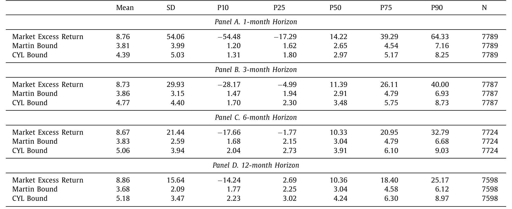
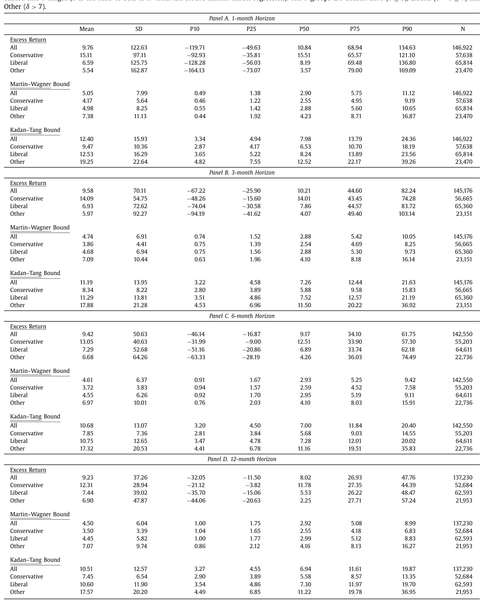
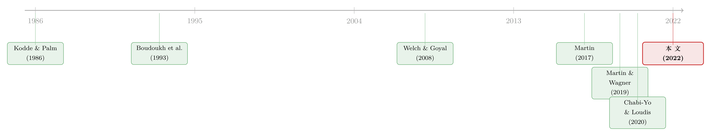

期权价格能给收益率定个「地板价」吗——下界的有效、紧致与预测力
本文读的是 Back, Crotty & Kazempour (2022, Journal of Financial Economics)：用期权价格给市场与个股风险溢价设下的那些「下界」，作者用条件检验逐一拷问——它们有效吗（确实是下界）？紧致吗（约等于真实溢价）？结论是：有效性拒绝不掉，但紧致性被强烈拒绝；下界往往「松」得离谱，直接拿来当预测器在很多情形下并不合理。
1 引言：一个诱人的承诺
预测股票收益率，是金融学里最古老、也最让人灰心的一桩生意。我们写下一个预测变量——股息率、账面市值比、期限利差——跑一个回归，得到一个 R² 小得可怜、还经不起样本外检验的系数，然后年复一年地重来。问题的根子在于：期望收益率 \(E_t[R_{t,T}]\) 是事前（ex ante）的、看不见的，而我们手里只有事后（ex post）那个噪声巨大的已实现收益。
于是 Martin (2017) 的工作显得格外诱人。他说：别去回归了，去看期权价格。期权市场每天都在为各种行权价的看涨、看跌合约报价，这些价格里编码着市场对未来的风险中性（risk-neutral）看法。Martin 证明，只要一个相当温和的条件成立，你就能用今天的期权价格，给市场组合未来的风险溢价算出一个下界——一个事前就能观测、无需估计任何参数的下界。
这是个了不起的承诺。如果这个下界足够「紧」，那它几乎就是期望收益率本身——预测难题被一举解决。一系列论文随之而来：Martin and Wagner (2019) 把它推广到个股，Kadan and Tang (2020) 给出了个股版本成立的条件，Chabi-Yo and Loudis (2020) 用更高阶的风险中性矩做出了更高的下界。
但承诺归承诺。首先要问的一个问题是：这些下界，真的成立吗？而接着，一个更尖锐的问题是：就算成立，它离真实的风险溢价有多远？是贴着地板的台阶，还是深不见底的地窖？本文做的，正是把这两个问题——有效性（validity）与紧致性（tightness）——拆开来，严格地检验。
2 下界从哪里来
要理解检验，得先看清被检验的对象。定义某资产在 \([t,T]\) 上的风险中性方差（也就是 Martin 的 SVIX²）：
$$ SVIX_{t,T}^2 = \mathrm{var}^*\!\left(\frac{R_{t,T}}{R_{f,t,T}}\right), $$
其中 \(R_{f,t,T}\) 是无风险总收益，\(\mathrm{var}^*\) 是风险中性方差。关键在于，这个量完全可以由期权价格算出——Martin 给出了用看跌、看涨价格做积分的公式：
$$ SVIX_{t,T}^2 = \frac{R_{f,t,T}}{S_t^2}\left[\int_0^{F_{t,T}}\!\mathrm{put}_{t,T}(K)\,dK + \int_{F_{t,T}}^{\infty}\!\mathrm{call}_{t,T}(K)\,dK\right]. $$
在所谓负相关条件（Negative Correlation Condition, NCC）下——即收益 \(R_{t,T}\) 与 \(M_{t,T}R_{t,T}\)（\(M\) 是随机贴现因子 SDF）负相关——Martin 推出了那个核心不等式：
$$ E_t[R_{t,T}] - R_{f,t,T} \;\ge\; R_{f,t,T}\, SVIX_{t,T}^2 . $$
这个 NCC 对市场组合相当可信：若存在一个相对风险厌恶系数为 \(\rho\) 的代表性投资者，则当 \(\rho>1\) 时 \(M_{t,T}R_{t,T}\) 随 \(R_{t,T}\) 递减，负相关自然成立；而当 \(\rho=1\)（对数效用）时相关为零，此时下界恰好取等——下界是紧的。换句话说，下界与真值之间的缝隙，正是那个被丢掉的协方差项。
个股的故事则要绕一道。Martin and Wagner (2019) 在丢掉一个股票固定效应后，得到个股下界：
$$ E_t[R_{i,t,T}] - R_{f,t,T} \;\ge\; R_{f,t,T}\,SVIX_{t,T}^2 + \frac{1}{2}R_{f,t,T}\left(SVIX_{i,t,T}^2 - SVIX_{t,T}^2\right). $$
而 Kadan and Tang (2020) 把 Martin 的市场公式直接套到个股上，得到「Kadan–Tang 下界」。一点简单代数就揭示出两者的关系：
$$ KT_{i,t,T} = 2\,MW_{i,t,T} + \big(\overline{KT}_{t,T} - 2\,\overline{M}_{t,T}\big), $$
括号里那一项在每个横截面上对所有股票都是常数。这意味着：用任一下界给股票分组排序，得到的组合完全一样——这个细节后面会回来咬人。
3 识别策略：把「有效」与「紧致」翻译成可检验的不等式
本文真正的技术内核不是某个新模型，而是一套多重不等式检验（multiple inequality test）。它把「下界有效」和「下界紧致」分别翻译成对一组矩的不等式约束，再用 Kodde–Palm/Wolak 的渐近分布理论去检验。
设 \(R^e_{t,T}\) 为超额收益，\(b_{t,T}\) 为条件风险溢价的下界。下界有效意味着：
$$ E_t[R^e_{t,T}] \ge b_{t,T}. $$
这是个条件不等式，没法直接检验。但真正关键的一步在于——取一组非负的条件变量 \(z_t\)（永远把常数 1 放进去），两边乘起来再取期望，由迭代期望定律（law of iterated expectations）可知：
于是检验就清爽了。令 \(\bar\lambda\) 为 \(\lambda_0\) 的样本类比，\(\hat\Sigma\) 为其协方差估计。定义三个距离统计量：
$$ D_1 = \min_{\lambda\ge 0}\,(\lambda-\bar\lambda)'\hat\Sigma^{-1}(\lambda-\bar\lambda),\qquad D_0 = \bar\lambda'\hat\Sigma^{-1}\bar\lambda,\qquad D_2 = D_0 - D_1 . $$
直觉是这样的：
- \(D_1\) 是 \(\bar\lambda\) 到非负象限的距离。如果 \(\lambda_0\ge 0\)（下界有效），\(\bar\lambda\) 就不太会跑到离非负象限很远的地方，所以 \(D_1\) 用来检验有效性（原假设 \(\lambda_0\ge 0\) vs. 备择「无约束」）。
- \(D_2\) 是 \(\bar\lambda\) 到原点的距离减去它到非负象限的距离。\(D_2\) 用来检验紧致性：原假设 \(\lambda_0=0\)（下界处处取等，是紧的）vs. 备择 \(\lambda_0\ge 0\)（只是有效）。
这两个统计量在原假设下都渐近服从卡方分布的混合（mixture of chi-squares），自由度取决于 \(\hat\lambda\) 中严格为正的分量个数——这套机器正是 Kodde and Palm (1986) 与 Wolak (1989) 留下的遗产，而把它用到风险溢价上的，最早是 Boudoukh et al. (1993)。
这里还藏着一个漂亮的等价表述。把每个 \(z_j\) 标准化为单位均值后，
$$ E[(R^e_{t,T}-b_{t,T})z_{jt}] = E[R^e_{t,T}-b_{t,T}] + \mathrm{cov}(R^e_{t,T}-b_{t,T},\,z_{jt}). $$
所以有效不只要求无条件均值非负 \(E[R^e-b]\ge 0\)，还要求松弛量与每个条件变量的协方差不能太负；紧致则要求无条件均值为零、且所有这些协方差都为零。一句话：条件检验 = 无条件检验 + 检验「把已实现松弛量回归到预测变量上」的那些系数。这一点，把本文和单纯回归 \(R_{t,T}=\alpha_h+\beta_h\,b_{t,T}+\varepsilon\) 的旧做法干净地连了起来——旧做法的麻烦在于 \(\beta_h\) 的标准误太大，既拒不掉 \(\beta_h=1\)（紧），也拒不掉 \(\beta_h=2\)（松），根本没有把握度（power）。
4 数据
市场层面：下界的日度时间序列从 1990 年 1 月 到 2020 年 12 月，对应的已实现市场超额收益到 2021 年 3 月。OptionMetrics 数据始于 1996 年，作者用 CBOE 的期权价格把样本往前接到了 1990 年——这恰是它能比 Boudoukh et al. 走得更远的原因（后者的样本在期权数据可得之前就结束了）。市场超额收益用 S&P 500 收益减去 Ken French 网站的无风险利率。
个股层面：1996 年 1 月 至 2020 年 12 月 的 S&P 500 成分股，共 1111 只不同股票，每月最多 504 只、最少 476 只，按 Kadan–Tang 的 \(\delta\)（beta 与市场模型 \(R^2\) 之比）分成 Conservative（\(\delta\le 3\)）、Liberal（\(3<\delta\le 7\)）、Other（\(\delta>7\)）三组。
先看一眼描述统计。市场的平均超额收益（约 8.76%，1 月期年化）显著高于两个下界的均值（Martin 约 3.81%、CYL 约 4.39%），缺口约 3.5%–5% 每年——这第一眼就预示了「松弛」的故事。

Table 1: presents summary statistics of the market
到了个股，量级更夸张：全样本月度超额收益均值 9.76%（年化），而 Martin–Wagner 下界均值仅 5.05%、Kadan–Tang 下界 12.40%。注意 Kadan–Tang 因为加了那个跨股票的常数项，系统性地比 Martin–Wagner 高出一截（前者均值 12.40% vs. 后者 5.05%）。

Table 2
5 主要结果：拒不掉有效，却强烈拒绝紧致
于是反转出现了。 把这套检验跑下来，两个问题得到了几乎相反的答案。
有效性：与 Boudoukh et al. (1993) 当年「零是不是市场风险溢价的下界」被拒绝不同，本文普遍拒绝不掉下界有效——无论是 Martin、Chabi-Yo/Loudis，还是个股的下界，数据都没给出反对它们是合法下界的证据。
紧致性：但一旦去检验「下界 = 真值」，证据强烈反对。下界不是贴着地板的台阶，而是离真值有相当距离的地窖。这正呼应了图里那个直觉——两个市场下界彼此高度相关（1 月期相关系数 99.8%，12 月期 98.9%），却都系统性地低于已实现收益。
那它还能不能拿来预测？这里答案是「分情形、且令人沮丧」：
- 全样本的单变量市场回归里，Martin 下界只在
6个月期显著，Chabi-Yo/Loudis 下界只在6和12个月期显著。但一旦控制住其他标准的市场收益预测变量，两个下界在所有期限上都变得显著——也就是说，它们携带了一些标准预测变量之外的增量信息。 - 个股层面更糟。在 Fama–MacBeth 回归中，个股下界是不显著的预测变量，而且在全样本里符号都是反的。作者进一步用按下界排序的组合收益验证：横截面上的可预测性相当有限。结合前面那个「两个个股下界排序完全相同」的代数事实——所谓个股下界的预测力，主要来自时间序列维度，而非横截面。
样本外呢？相对「历史市场均值」这个基准，下界有一点跑赢（尤其是 Chabi-Yo/Loudis 市场下界和 Martin–Wagner 个股下界），但统计上不显著——数据序列实在太短。一个看起来有希望的改进是「下界 + 过去的平均松弛量」，但作者用模拟泼了盆冷水：我们估计历史市场均值有几十年数据，估计下界的平均松弛量却只有二十来年。模拟显示，可能还需要再积累一个世纪甚至更久的数据，「下界 + 过去平均松弛量」的预测才能稳定地、显著地跑赢市场均值基准。
这是全文最该被记住的一句话：下界在理论上优美、事前可观测，但它的松弛度太大、可用历史太短，使得「直接拿下界当点预测」在很多情形下并不合理。优美的不等式，不等于好用的预测器。
6 文献脉络
这条线的起点，是一个被反复追问的老问题：事前的市场风险溢价，到底是不是正的？ Boudoukh et al. (1993) 给出过一个检验「零是否为下界」的方法，用的正是 Kodde and Palm (1986)、Wolak (1989) 那套不等式约束的渐近理论。与此并行，Welch and Goyal (2008) 系统地盘点了股权溢价预测变量的样本外表现，给出了一组日后被反复使用的预测变量——它们在本文里化身为条件变量 \(z_t\)。

真正点燃这条线的，是 Martin (2017)：他把「无需估计参数、事前可观测的下界」从期权价格里直接读出来。随后 Martin and Wagner (2019) 推广到个股，Kadan and Tang (2020) 厘清个股版本成立的条件，Chabi-Yo and Loudis (2020) 用更高阶的风险中性矩抬高了下界。本文（2022）站在这条脉络的审视者位置：它不发明新下界，而是把前人留下的下界，用一套统一的条件检验逐一拷问其有效与紧致，并诚实地评估它们的预测力。值得一提的是，Chabi-Yo, Dim and Vilkov (2022) 的「广义下界」反过来沿用了本文「Kodde–Palm/Boudoukh–Richardson–Smith 方法 + Goyal–Welch 变量」的思路，两篇互为补充。
（从期权价格里反推未来分布、再为收益定价这条思路，也可参见博客里《把未来的概率从期权价格里「读」出来》与《把「这一次会议」的恐惧，从期权价格里解出来》；而「风险溢价是真消失还是被噪声盖住」的讨论，见《风险溢价，是「消失」了，还是「断」掉了？》。）
7 评论与延伸（Q&A + 研究方向）
(a) 几个可能的疑问
Q：「有效」和「紧致」到底差在哪，为什么要分开检验？
有效是「\(\ge\)」，紧致是「$=$」。有效只要求下界不被真值穿透；紧致要求下界几乎就是真值。本文的核心发现恰恰是两者的劈裂：拒不掉有效（它确实是个合法地板），却强烈拒绝紧致（这个地板离天花板很远）。一个有效但不紧的下界，作为「约束」可信，作为「预测」却可能毫无用处。
Q：既然回归 \(\beta_h\) 拒不掉 1 也拒不掉 2，为什么本文的检验更可信？
因为旧的回归做法把所有信息压进一个标准误巨大的斜率系数里，把握度太低——它「拒绝不了任何东西」，所以「拒绝不掉紧致」其实什么都没说明。本文把问题重构成对一组矩的不等式约束（已实现松弛量与多个条件变量的交互），用多重不等式检验的渐近理论，从而获得了真正拒绝紧致所需的把握度。
Q：为什么说个股下界的预测力「主要在时间序列」？
一个代数事实是：Kadan–Tang 下界 = 2×Martin–Wagner 下界 + 一个跨股票常数。常数在每个横截面里对所有股票相同，所以两种下界对股票的排序完全一致，按它们分组得到的组合也一样。这意味着任何横截面排序信息都被这个共同结构稀释了；剩下能预测收益的，主要是下界随时间共同涨落的那部分。
Q：拒不掉有效性，是不是因为检验没把握度，而非下界真的有效？
这是个公允的担忧。但本文同时报告了对紧致性的强烈拒绝——如果检验整体没把握度，它不该能拒绝紧致。能拒紧致、拒不掉有效，说明把握度足够分辨「不等」却不足以抓住对有效性的违背，这更像是「下界确实有效」的证据，而非纯粹的低把握度假象。
Q：样本外跑赢历史均值却不显著，是方法问题还是数据问题？
主要是数据。期权价格 1996 年才有（本文费力接到 1990 年），而历史市场均值可以用上几十年。作者的模拟直白地说：要让「下界 + 过去平均松弛量」稳定跑赢，可能还需一个世纪量级的数据。这是个时间的诅咒，不是估计量的错。
Q：NCC 这个关键假设可靠吗？
对市场组合相当可靠：只要代表性投资者的相对风险厌恶 \(\rho>1\)，NCC 就成立，且 \(\rho=1\) 时下界取等。对个股则脆弱得多——Kadan and Tang (2020) 指出只有当 \(\delta\) 足够小（低 beta、高 \(R^2\) 的股票）时近似才好。这也是个股结果远比市场结果难看的一个深层原因。
(b) 几个可能的研究问题与提案
1. 把同一套「有效 vs. 紧致」检验搬到公司债的风险溢价
【经济故事】公司债市场也有从 CDS 与债券期权里读出风险中性矩的尝试。若能为信用利差构造类似的事前下界，再用本文的多重不等式检验拷问其有效与紧致，就能回答「信用风险溢价的事前下界是否可用」这一从未被严格检验的问题。 【可行性】中。需要流动的单名 CDS 期权或债券期权数据（覆盖度是硬约束），识别上可直接移植 Kodde–Palm/Wolak 框架，方法成熟，瓶颈在数据而非计量。
2. 用下界的「松弛度」本身去刻画市场状态
【经济故事】本文发现长期限收益的已实现松弛量在下界很高时反而取到最大值——松弛度可能本身就是一个状态变量（恐慌期协方差项被放大）。把松弛度建模为可预测对象，或许比直接用下界更有价值。 【可行性】高。所需数据本文已全部具备（期权 + 已实现收益），可直接把松弛量对宏观/不确定性变量（VIX、期限利差）做预测回归。
3. 外资持有人结构与个股下界的横截面失效
【经济故事】本文发现个股下界横截面预测力很弱、符号甚至反了。一个机制猜想是：被外资或被动资金重仓的股票，其期权价格反映的风险中性信念与本地基本面脱节，导致下界在横截面上失真。 【可行性】中。需要把 13F/外资持股数据与个股期权下界匹配，识别上可做「按外资持股分组的下界预测力」面板检验，doable，但因果解释需谨慎（持股结构内生）。
4. 流动性冲击下下界的有效性是否被破坏
【经济故事】下界由期权积分算出，深度虚值期权流动性差。流动性枯竭时（如 2008、2020 年 3 月），期权价格可能系统性偏离，使「有效」临时失效。检验下界有效性是否随流动性状态时变，有现实意义。 【可行性】高。把样本按期权市场流动性指标分段，分别跑本文的 \(D_1\) 有效性检验即可，数据与方法均现成。
8 参考文献
- Back, K., Crotty, K., Kazempour, S.M. (2022). Validity, tightness, and forecasting power of risk premium bounds. Journal of Financial Economics 144(2), 732–760.
- Boudoukh, J., Richardson, M., Smith, T. (1993). Is the ex ante risk premium always positive?: a new approach to testing conditional asset pricing models. Journal of Financial Economics 34(3), 387–408.
- Chabi-Yo, F., Loudis, J. (2020). The conditional expected market return. Journal of Financial Economics 137(3), 752–786.
- Chabi-Yo, F., Dim, C., Vilkov, G. (2022). Generalized bounds on the conditional expected excess return on individual stocks. Management Science, forthcoming.
- Kadan, O., Tang, X. (2020). A bound on expected stock returns. Review of Financial Studies 33(4), 1565–1617.
- Kodde, D.A., Palm, F.C. (1986). Wald criteria for jointly testing equality and inequality restrictions. Econometrica 54, 1243–1248.
- Martin, I. (2017). What is the expected return on the market? Quarterly Journal of Economics 132(1), 367–433.
- Martin, I.W.R., Wagner, C. (2019). What is the expected return on a stock? Journal of Finance 74(4), 1887–1929.
- Welch, I., Goyal, A. (2008). A comprehensive look at the empirical performance of equity market prediction. Review of Financial Studies 21, 1455–1508.
- Wolak, F.A. (1989). Testing inequality constraints in linear econometric models. Journal of Econometrics 41(2), 205–235.